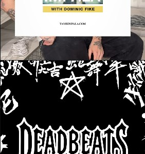
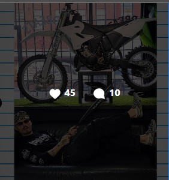
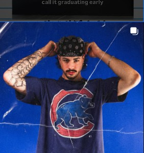
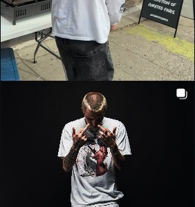

THE PIECES
THAT STAY.
Why the best vintage pieces feel less like shopping and more like finding a message somebody left behind.

Why the best vintage pieces feel less like shopping and more like finding a message somebody left behind.

Document the bikes, the parking lots, the jackets and the people who make the scene feel bigger than the sum of its parts.

Portraits and mini-interviews with the artists, regulars, collectors and characters orbiting Deadbeats.

A visual study of the fonts, patches, logos and handmade marks that keep showing up in the Deadbeats world.
THE CLOTHES ARE THE ENTRY POINT. THE STORIES ARE THE REASON TO COME BACK.
— DEADBEATS / JOURNALThink zine, not corporate blog.
Every journal post can eventually connect products, collections, Instagram posts, event pages and collaborators. That makes the editorial layer useful for both culture and commerce without turning every story into an advertisement.